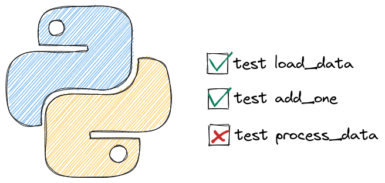

6.13. Testing#

6.13.1. Efficiently Resume Work After Breaks with Failing Tests#
Do you forget what feature to implement when taking a break from work?
To keep your train of thought, write a unit test that describes the desired behavior of the feature and makes it fail intentionally.
This will give you a clear idea of what to work on when returning to the project, allowing you to get back on track faster.
def calculate_average(nums: list):
return sum(nums)/len(nums)
# TODO: code to handle an empty list
def test_calculate_average_two_nums():
# Will work
nums = [2, 3]
assert calculate_average(nums) == 2.5
def test_calculate_average_empty_list():
# Will fail intentionally
nums = []
return calculate_average(nums) == 0
6.13.2. Choose a Descriptive Name Over a Short One When Naming Your Function#
Using a short and unclear name for a testing function may lead to confusion and misunderstandings. To make your tests more readable, use a descriptive name instead, even if it results in a longer name.
Instead of this:
def contain_word(word: str, text: str):
return word in text
def test_contain_word_1():
assert contain_word(word="duck", text="This is a duck")
def test_contain_word_2():
assert contain_word(word="duck", text="This is my coworker, Mr. Duck")
Write this:
def contain_word(word: str, text: str):
return word in text
def test_contain_word_exact():
assert contain_word(word="duck", text="This is a duck")
def test_contain_word_different_case():
assert contain_word(word="duck", text="This is my coworker, Mr. Duck")
6.13.3. pytest benchmark: A Pytest Fixture to Benchmark Your Code#
Show code cell content
!pip install pytest-benchmark
If you want to benchmark your code while testing with pytest, try pytest-benchmark.
To use pytest-benchmark works, add benchmark to the test function that you want to benchmark.
%%writefile pytest_benchmark_example.py
def list_comprehension(len_list=5):
return [i for i in range(len_list)]
def test_concat(benchmark):
res = benchmark(list_comprehension)
assert res == [0, 1, 2, 3, 4]
On your terminal, type:
$ pytest pytest_benchmark_example.py
Now you should see the statistics of the time it takes to execute the test functions on your terminal:
============================= test session starts ==============================
platform linux -- Python 3.8.10, pytest-6.2.5, py-1.10.0, pluggy-0.13.1
benchmark: 3.4.1 (defaults: timer=time.perf_counter disable_gc=False min_rounds=5 min_time=0.000005 max_time=1.0 calibration_precision=10 warmup=False warmup_iterations=100000)
rootdir: /home/khuyen/book/book/Chapter4
plugins: hydra-core-1.1.1, Faker-8.12.1, benchmark-3.4.1, repeat-0.9.1, anyio-3.3.0
collected 1 item
pytest_benchmark_example.py . [100%]
----------------------------------------------------- benchmark: 1 tests ----------------------------------------------------
Name (time in ns) Min Max Mean StdDev Median IQR Outliers OPS (Mops/s) Rounds Iterations
-----------------------------------------------------------------------------------------------------------------------------
test_concat 286.4501 4,745.5498 309.3872 106.6583 297.5001 5.3500 2686;5843 3.2322 162101 20
-----------------------------------------------------------------------------------------------------------------------------
Legend:
Outliers: 1 Standard Deviation from Mean; 1.5 IQR (InterQuartile Range) from 1st Quartile and 3rd Quartile.
OPS: Operations Per Second, computed as 1 / Mean
============================== 1 passed in 2.47s ===============================
6.13.4. pytest.mark.parametrize: Test Your Functions with Multiple Inputs#
Show code cell content
!pip install pytest
If you want to test your function with different examples, use pytest.mark.parametrize decorator.
To use pytest.mark.parametrize, add @pytest.mark.parametrize to the test function that you want to experiment with.
%%writefile pytest_parametrize.py
import pytest
def text_contain_word(word: str, text: str):
'''Find whether the text contains a particular word'''
return word in text
test = [
('There is a duck in this text',True),
('There is nothing here', False)
]
@pytest.mark.parametrize('sample, expected', test)
def test_text_contain_word(sample, expected):
word = 'duck'
assert text_contain_word(word, sample) == expected
Writing pytest_parametrize.py
In the code above, I expect the first sentence to contain the word “duck” and expect the second sentence not to contain that word. Let’s see if my expectations are correct by running:
$ pytest pytest_parametrize.py
============================= test session starts ==============================
platform darwin -- Python 3.9.6, pytest-7.2.1, pluggy-1.0.0 -- /Users/khuyen/book/venv/bin/python3
cachedir: .pytest_cache
rootdir: /Users/khuyen/book/book/Chapter5
plugins: anyio-3.6.2
collected 2 items
pytest_parametrize.py::test_text_contain_word[There is a duck in this text-True] PASSED [ 50%]
pytest_parametrize.py::test_text_contain_word[There is nothing here-False] PASSED [100%]
============================== 2 passed in 0.01s ===============================
Sweet! 2 tests passed when running pytest.
6.13.5. pytest parametrize twice: Test All Possible Combinations of Two Sets of Parameters#
Show code cell content
!pip install pytest
If you want to test the combinations of two sets of parameters, writing all possible combinations can be time-consuming and is difficult to read.
import pytest
def average(n1, n2):
return (n1 + n2) / 2
def perc_difference(n1, n2):
return (n2 - n1)/n1 * 100
# Test the combinations of operations and inputs
@pytest.mark.parametrize("operation, n1, n2", [(average, 1, 2), (average, 2, 3), (perc_difference, 1, 2), (perc_difference, 2, 3)])
def test_is_float(operation, n1, n2):
assert isinstance(operation(n1, n2), float)
You can save your time by using pytest.mark.parametrize twice instead.
%%writefile pytest_combination.py
import pytest
def average(n1, n2):
return (n1 + n2) / 2
def perc_difference(n1, n2):
return (n2 - n1)/n1 * 100
# Test the combinations of operations and inputs
@pytest.mark.parametrize("operation", [average, perc_difference])
@pytest.mark.parametrize("n1, n2", [(1, 2), (2, 3)])
def test_is_float(operation, n1, n2):
assert isinstance(operation(n1, n2), float)
On your terminal, run:
$ pytest -v pytest_combination.py
============================= test session starts ==============================
platform linux -- Python 3.8.10, pytest-6.2.5, py-1.10.0, pluggy-0.13.1 -- /home/khuyen/book/venv/bin/python3
cachedir: .pytest_cache
benchmark: 3.4.1 (defaults: timer=time.perf_counter disable_gc=False min_rounds=5 min_time=0.000005 max_time=1.0 calibration_precision=10 warmup=False warmup_iterations=100000)
hypothesis profile 'default' -> database=DirectoryBasedExampleDatabase('/home/khuyen/book/book/Chapter5/.hypothesis/examples')
rootdir: /home/khuyen/book/book/Chapter5
plugins: hydra-core-1.1.1, Faker-8.12.1, benchmark-3.4.1, repeat-0.9.1, anyio-3.3.0, hypothesis-6.31.6, typeguard-2.13.3
collected 4 items
pytest_combination.py::test_is_float[1-2-average] PASSED [ 25%]
pytest_combination.py::test_is_float[1-2-perc_difference] PASSED [ 50%]
pytest_combination.py::test_is_float[2-3-average] PASSED [ 75%]
pytest_combination.py::test_is_float[2-3-perc_difference] PASSED [100%]
============================== 4 passed in 0.27s ===============================
From the output above, we can see that all possible combinations of the given operations and inputs are tested.
6.13.6. Assign IDs to Test Cases#
When using pytest parametrize, it can be difficult to understand the role of each test case.
%%writefile pytest_without_ids.py
from pytest import mark
def average(n1, n2):
return (n1 + n2) / 2
@mark.parametrize(
"n1, n2",
[(-1, -2), (2, 3), (0, 0)],
)
def test_is_float(n1, n2):
assert isinstance(average(n1, n2), float)
$ pytest -v pytest_without_ids.py
============================= test session starts ==============================
platform linux -- Python 3.8.10, pytest-6.2.5, py-1.10.0, pluggy-0.13.1 -- /home/khuyen/book/venv/bin/python3
cachedir: .pytest_cache
benchmark: 3.4.1 (defaults: timer=time.perf_counter disable_gc=False min_rounds=5 min_time=0.000005 max_time=1.0 calibration_precision=10 warmup=False warmup_iterations=100000)
hypothesis profile 'default' -> database=DirectoryBasedExampleDatabase('/home/khuyen/book/book/Chapter5/.hypothesis/examples')
rootdir: /home/khuyen/book/book/Chapter5
plugins: hydra-core-1.1.1, Faker-8.12.1, benchmark-3.4.1, repeat-0.9.1, anyio-3.3.0, hypothesis-6.31.6, cases-3.6.10, typeguard-2.13.3
collected 3 items
pytest_without_ids.py::test_is_float[-1--2] PASSED [ 33%]
pytest_without_ids.py::test_is_float[2-3] PASSED [ 66%]
pytest_without_ids.py::test_is_float[0-0] PASSED [100%]
============================== 3 passed in 0.26s ===============================
You can add ids to pytest parametrize to assign a name to each test case.
%%writefile pytest_ids.py
from pytest import mark
def average(n1, n2):
return (n1 + n2) / 2
@mark.parametrize(
"n1, n2",
[(-1, -2), (2, 3), (0, 0)],
ids=["neg and neg", "pos and pos", "zero and zero"],
)
def test_is_float(n1, n2):
assert isinstance(average(n1, n2), float)
$ pytest -v pytest_ids.py
============================= test session starts ==============================
platform linux -- Python 3.8.10, pytest-6.2.5, py-1.10.0, pluggy-0.13.1 -- /home/khuyen/book/venv/bin/python3
cachedir: .pytest_cache
benchmark: 3.4.1 (defaults: timer=time.perf_counter disable_gc=False min_rounds=5 min_time=0.000005 max_time=1.0 calibration_precision=10 warmup=False warmup_iterations=100000)
hypothesis profile 'default' -> database=DirectoryBasedExampleDatabase('/home/khuyen/book/book/Chapter5/.hypothesis/examples')
rootdir: /home/khuyen/book/book/Chapter5
plugins: hydra-core-1.1.1, Faker-8.12.1, benchmark-3.4.1, repeat-0.9.1, anyio-3.3.0, hypothesis-6.31.6, cases-3.6.10, typeguard-2.13.3
collected 3 items
pytest_ids.py::test_is_float[neg and neg] PASSED [ 33%]
pytest_ids.py::test_is_float[pos and pos] PASSED [ 66%]
pytest_ids.py::test_is_float[zero and zero] PASSED [100%]
============================== 3 passed in 0.27s ===============================
We can see that instead of [-1--2], the first test case is shown as neg and neg. This makes it easier for others to understand the roles of your test cases.
If you want to specify the test IDs together with the actual data, instead of listing them separately, use pytest.param.
%%writefile pytest_param.py
import pytest
def average(n1, n2):
return (n1 + n2) / 2
examples = [
pytest.param(-1, -2, id="neg-neg"),
pytest.param(2, 3, id="pos-pos"),
pytest.param(0, 0, id="0-0"),
]
@pytest.mark.parametrize("n1, n2", examples)
def test_is_float(n1, n2):
assert isinstance(average(n1, n2), float)
$ pytest -v pytest_param.py
!pytest -v pytest_param.py
============================= test session starts ==============================
platform darwin -- Python 3.8.9, pytest-7.1.2, pluggy-1.0.0 -- /Users/khuyen/book/venv/bin/python3
cachedir: .pytest_cache
rootdir: /Users/khuyen/book/Efficient_Python_tricks_and_tools_for_data_scientists/Chapter5
plugins: anyio-3.6.1, pyfakefs-4.6.3, picked-0.4.6
collecting ...
collected 3 items
pytest_param.py::test_is_float[neg-neg] PASSED [ 33%]
pytest_param.py::test_is_float[pos-pos] PASSED [ 66%]
pytest_param.py::test_is_float[0-0] PASSED [100%]
============================== 3 passed in 0.01s ===============================
6.13.7. Pytest Fixtures: Use The Same Data for Different Tests#
Show code cell content
!pip install pytest textblob
If you want to use the same data to test different functions, use pytest fixtures.
To use pytest fixtures, add the decorator @pytest.fixture to the function that creates the data you want to reuse.
%%writefile pytest_fixture.py
import pytest
from textblob import TextBlob
def extract_sentiment(text: str):
"""Extract sentimetn using textblob. Polarity is within range [-1, 1]"""
text = TextBlob(text)
return text.sentiment.polarity
@pytest.fixture
def example_data():
return 'Today I found a duck and I am happy'
def test_extract_sentiment(example_data):
sentiment = extract_sentiment(example_data)
assert sentiment > 0
On your terminal, type:
$ pytest pytest_fixture.py
Output:
============================= test session starts ==============================
platform linux -- Python 3.8.10, pytest-6.2.5, py-1.10.0, pluggy-1.0.0
benchmark: 3.4.1 (defaults: timer=time.perf_counter disable_gc=False min_rounds=5 min_time=0.000005 max_time=1.0 calibration_precision=10 warmup=False warmup_iterations=100000)
rootdir: /home/khuyen/book/book/Chapter4
plugins: benchmark-3.4.1, anyio-3.3.0
collected 1 item
pytest_fixture.py . [100%]
============================== 1 passed in 0.53s ===============================
6.13.8. Execute a Fixture Only Once per Session#
By default, every time you use a pytest fixture in a test, a fixture will be executed.
# example.py
import pytest
@pytest.fixture
def my_data():
print("Reading data...")
return 1
def test_division(my_data):
print("Test division...")
assert my_data / 2 == 0.5
def test_modulus(my_data):
print("Test modulus...")
assert my_data % 2 == 1
From the output, we can see that the fixture my_data is executed twice.
$ pytest example.py -s
Reading data...
Test division...
Reading data...
Test modulus...
If a fixture is expensive to execute, you can make the fixture be executed only once per session using scope=session.
%%writefile pytest_scope.py
import pytest
@pytest.fixture(scope="session")
def my_data():
print("Reading data...")
return 1
def test_division(my_data):
print("Test division...")
assert my_data / 2 == 0.5
def test_modulus(my_data):
print("Test modulus...")
assert my_data % 2 == 1
From the output, we can see that the fixture my_data is executed only once.
$ pytest pytest_scope.py -s
Reading data...
Test division...
Test modulus...
6.13.9. Pytest skipif: Skip a Test When a Condition is Not Met#
If you want to skip a test when a condition is not met, use pytest skipif. For example, in the code below, I use skipif to skip a test if the python version is less than 3.9.
%%writefile pytest_skip.py
import sys
import pytest
def add_two(num: int):
return num + 2
@pytest.mark.skipif(sys.version_info < (3, 9), reason="Eequires Python 3.9 or higher")
def test_add_two():
assert add_two(3) == 5
On your terminal, type:
$ pytest pytest_skip.py -v
Output:
============================= test session starts ==============================
platform darwin -- Python 3.8.10, pytest-7.1.2, pluggy-1.0.0 -- /Users/khuyen/book/venv/bin/python3
cachedir: .pytest_cache
rootdir: /Users/khuyen/book/Efficient_Python_tricks_and_tools_for_data_scientists/Chapter5
collecting ...
collected 1 item
pytest_skip.py::test_add_two SKIPPED (Eequires Python 3.9 or higher) [100%]
============================== 1 skipped in 0.01s ==============================
6.13.10. Pytest xfail: Mark a Test as Expected to Fail#
If you expect a test to fail, use pytest xfail marker. This will prevent pytest from marking a test as failed when there is an exception.
To be more specific about what exception you expect to see, use the raises argument.
import pandas as pd
df = pd.DataFrame(
{
"col1": [1, 2, 3, 4, 3],
"col2": ["a", "a", "b", "b", "c"],
}
)
df.groupby(["col2"]).agg({"col1": "mean"})
| col1 | |
|---|---|
| col2 | |
| a | 1.5 |
| b | 3.5 |
| c | 3.0 |
%%writefile pytest_mark_xfail.py
import pytest
import pandas as pd
import numpy as np
def get_mean(df, group_column, value_column):
if df[group_column].isna().any():
raise ValueError("Group column contains NaN values")
return df.groupby(group_column)[value_column].mean()
@pytest.mark.xfail(raises=ValueError)
def test_cget_mean():
df = pd.DataFrame({"group": ["a", np.nan, "b", "b"], "value": [1, 2, 3, 0]})
get_mean(df, "group", "value")
Writing pytest_mark_xfail.py
On your terminal, type:
$ pytest pytest_mark_xfail.py
We can see that no test failed.
============================= test session starts ==============================
platform darwin -- Python 3.11.2, pytest-7.4.3, pluggy-1.3.0
rootdir: /Users/khuyentran/book/Efficient_Python_tricks_and_tools_for_data_scientists/Chapter5
plugins: dvc-3.28.0, hydra-core-1.3.2, typeguard-4.1.5, hypothesis-6.88.4
collected 1 item
pytest_mark_xfail.py x [100%]
============================== 1 xfailed in 0.31s ==============================
6.13.11. Test for Specific Exceptions in Unit Testing#
To test for a specific exception in unit testing, use pytest.raises.
For example, you can use it to test if a ValueError is thrown when there are NaN values in the group column.
%%writefile pytest_to_fail.py
import pytest
import pandas as pd
import numpy as np
def get_mean(df, group_column, value_column):
if df[group_column].isna().any():
raise ValueError("Group column contains NaN values")
return df.groupby(group_column)[value_column].mean()
def test_get_mean():
with pytest.raises(ValueError):
df = pd.DataFrame({"group": ["a", np.nan, "b", "b"], "value": [1, 2, 3, 0]})
get_mean(df, "group", "value")
Overwriting pytest_to_fail.py
$ pytest pytest_to_fail.py
============================= test session starts ==============================
platform darwin -- Python 3.11.2, pytest-7.4.3, pluggy-1.3.0
rootdir: /Users/khuyentran/book/Efficient_Python_tricks_and_tools_for_data_scientists/Chapter5
plugins: dvc-3.28.0, hydra-core-1.3.2, typeguard-4.1.5, hypothesis-6.88.4
collected 1 item
pytest_to_fail.py . [100%]
============================== 1 passed in 0.28s ===============================
6.13.12. Organize and Control Test Execution using pytest.mark#
pytest.mark lets you label test functions for conditional or selective execution based on specific needs.
For instance, you can mark slow tests or tests involving integration with external services to run them separately or exclude them from regular test runs. This helps you organize and execute your tests more effectively.
%%writefile pytest_mark.py
import pytest
import time
@pytest.mark.slow
def test_long_running_function():
# Test that takes a long time to complete
time.sleep(5)
@pytest.mark.db
def test_database_interaction():
# Test that requires a database connection
pass
def test_function_1():
pass
def test_function_2():
pass
Overwriting pytest_mark.py
Run only slow tests:
$ pytest pytest_mark.py -m slow
============================= test session starts ==============================
platform darwin -- Python 3.11.2, pytest-7.4.3, pluggy-1.3.0
rootdir: /Users/khuyentran/book/Efficient_Python_tricks_and_tools_for_data_scientists/Chapter5
plugins: dvc-3.28.0, hydra-core-1.3.2, typeguard-4.1.5, anyio-4.2.0, hypothesis-6.88.4
collected 4 items / 3 deselected / 1 selected
pytest_mark.py . [100%]
================= 1 passed, 3 deselected, 2 warnings in 5.02s ==================
Skip slow tests:
$ pytest pytest_mark.py -m "not slow"
============================= test session starts ==============================
platform darwin -- Python 3.11.2, pytest-7.4.3, pluggy-1.3.0
rootdir: /Users/khuyentran/book/Efficient_Python_tricks_and_tools_for_data_scientists/Chapter5
plugins: dvc-3.28.0, hydra-core-1.3.2, typeguard-4.1.5, anyio-4.2.0, hypothesis-6.88.4
collected 4 items / 1 deselected / 3 selected
pytest_mark.py ... [100%]
================= 3 passed, 1 deselected, 2 warnings in 0.01s ==================
Skip database tests:
$ pytest pytest_mark.py -m "not db"
============================= test session starts ==============================
platform darwin -- Python 3.11.2, pytest-7.4.3, pluggy-1.3.0
rootdir: /Users/khuyentran/book/Efficient_Python_tricks_and_tools_for_data_scientists/Chapter5
plugins: dvc-3.28.0, hydra-core-1.3.2, typeguard-4.1.5, anyio-4.2.0, hypothesis-6.88.4
collected 4 items / 1 deselected / 3 selected
pytest_mark.py ... [100%]
================= 3 passed, 1 deselected, 2 warnings in 5.02s ==================
6.13.13. Verify Logging Error with pytest#
To ensure that your application logs an error under a specific condition, use the built-in fixture called caplog in pytest.
This fixture allows you to capture log messages generated during the execution of your test.
%%writefile test_logging.py
from logging import getLogger
logger = getLogger(__name__)
def divide(num1: float, num2: float) -> float:
if num2 == 0:
logger.error(f"Can't divide {num1} by 0")
else:
logger.info(f"Divide {num1} by {num2}")
return num1 / num2
def test_divide_by_0(caplog):
divide(1, 0)
assert "Can't divide 1 by 0" in caplog.text
$ pytest test_logging.py
============================= test session starts ==============================
platform darwin -- Python 3.9.6, pytest-7.2.1, pluggy-1.0.0
rootdir: /Users/khuyentran/book/Efficient_Python_tricks_and_tools_for_data_scientists/Chapter5
plugins: anyio-3.6.2
collected 1 item
test_logging.py . [100%]
============================== 1 passed in 0.66s ===============================
6.13.14. Pytest repeat#
Show code cell content
!pip install pytest-repeat
It is a good practice to test your functions to make sure they work as expected, but sometimes you need to test 100 times until you found the rare cases when the test fails. That is when pytest-repeat comes in handy.
To use pytest-repeat, add the decorator @pytest.mark.repeat(N) to the test function you want to repeat N times
%%writfile pytest_repeat_example.py
import pytest
import random
def generate_numbers():
return random.randint(1, 100)
@pytest.mark.repeat(100)
def test_generate_numbers():
assert generate_numbers() > 1 and generate_numbers() < 100
On your terminal, type:
$ pytest pytest_repeat_example.py
We can see that 100 experiments are executed and passed:
============================= test session starts ==============================
platform linux -- Python 3.8.10, pytest-6.2.5, py-1.10.0, pluggy-1.0.0
benchmark: 3.4.1 (defaults: timer=time.perf_counter disable_gc=False min_rounds=5 min_time=0.000005 max_time=1.0 calibration_precision=10 warmup=False warmup_iterations=100000)
rootdir: /home/khuyen/book/book/Chapter4
plugins: benchmark-3.4.1, repeat-0.9.1, anyio-3.3.0
collected 100 items
pytest_repeat_example.py ............................................... [ 47%]
..................................................... [100%]
============================= 100 passed in 0.07s ==============================
6.13.15. pytest-sugar: Show the Failures and Errors Instantly With a Progress Bar#
Show code cell content
!pip install pytest-sugar
It can be frustrating to wait for a lot of tests to run before knowing the status of the tests. If you want to see the failures and errors instantly with a progress bar, use pytest-sugar.
pytest-sugar is a plugin for pytest. To see how pytest-sugar works, assume we have several test files in the pytest_sugar_example directory.
%ls pytest_sugar_example
test_benchmark_example.py test_parametrize.py
test_fixture.py test_repeat_example.py
The code below shows how the outputs will look like when running pytest.
$ pytest pytest_sugar_example
Test session starts (platform: linux, Python 3.8.10, pytest 6.2.5, pytest-sugar 0.9.4)
benchmark: 3.4.1 (defaults: timer=time.perf_counter disable_gc=False min_rounds=5 min_time=0.000005 max_time=1.0 calibration_precision=10 warmup=False warmup_iterations=100000)
rootdir: /home/khuyen/book/book/Chapter5
plugins: hydra-core-1.1.1, Faker-8.12.1, benchmark-3.4.1, repeat-0.9.1, anyio-3.3.0, sugar-0.9.4
collecting ...
pytest_sugar_example/test_benchmark_example.py ✓ 1% ▏
pytest_sugar_example/test_fixture.py ✓ 2% ▎
pytest_sugar_example/test_parametrize.py ✓✓ 4% ▍
pytest_sugar_example/test_repeat_example.py ✓✓✓✓✓✓✓✓✓✓✓✓✓✓✓✓✓✓✓✓ 23% ██▍
✓✓✓✓✓✓✓✓✓✓✓✓✓✓✓✓✓✓✓✓ 42% ████▎
✓✓✓✓✓✓✓✓✓✓✓✓✓✓✓✓✓✓✓✓ 62% ██████▎
✓✓✓✓✓✓✓✓✓✓✓✓✓✓✓✓✓✓✓✓ 81% ████████▏
✓✓✓✓✓✓✓✓✓✓✓✓✓✓✓✓✓✓✓✓100% ██████████
---------------------------------------------------- benchmark: 1 tests ---------------------------------------------------
Name (time in ns) Min Max Mean StdDev Median IQR Outliers OPS (Mops/s) Rounds Iterations
---------------------------------------------------------------------------------------------------------------------------
test_concat 302.8003 3,012.5000 328.2844 97.9087 321.5999 8.2495 866;2220 3.0461 90868 20
---------------------------------------------------------------------------------------------------------------------------
Legend:
Outliers: 1 Standard Deviation from Mean; 1.5 IQR (InterQuartile Range) from 1st Quartile and 3rd Quartile.
OPS: Operations Per Second, computed as 1 / Mean
Results (2.63s):
104 passed
6.13.18. Efficient Testing of Python Class with setUp Method#
When testing a Python class, it can be repetitive and time-consuming to create multiple instances to test a large number of instance methods.
%%writefile get_dog.py
class Dog:
def __init__(self, name, age):
self.name = name
self.age = age
def walk(self):
return f"{self.name} is walking"
def bark(self):
return f"{self.name} is barking"
Writing get_dog.py
%%writefile test_get_dog.py
import unittest
from get_dog import Dog
class TestDog(unittest.TestCase):
def test_walk(self):
dog = Dog("Max", 3)
dog.walk() == "Max is walking"
def test_bark(self):
dog = Dog("Max", 3)
dog.bark() == "Max is barking"
A better approach is to use the setUp method to instantiate a class object before running each test.
%%writefile test_get_dog.py
import unittest
from get_dog import Dog
class TestDog(unittest.TestCase):
def setUp(self):
self.dog = Dog("Max", 3)
def test_walk(self):
self.dog.walk() == "Max is walking"
def test_bark(self):
self.dog.bark() == "Max is barking"
Writing test_get_dog.py
6.13.19. FreezeGun: Freeze Dynamic Time in Unit Testing#
Show code cell content
!pip install freezegun
Unit tests require static input, but time is dynamic and constantly changing. With FreezeGun, you can freeze time to a specific point, ensuring accurate verification of the tested features.
%%writefile test_freezegun.py
from freezegun import freeze_time
import datetime
def get_day_of_week():
return datetime.datetime.now().weekday()
@freeze_time("2023-06-13")
def test_get_day_of_week():
assert get_day_of_week() == 1
$ pytest test_freezegun.py
============================= test session starts ==============================
platform darwin -- Python 3.9.6, pytest-7.2.1, pluggy-1.0.0
rootdir: /Users/khuyentran/book/Efficient_Python_tricks_and_tools_for_data_scientists/Chapter5
plugins: anyio-3.6.2
collected 1 item
test_freezegun.py . [100%]
============================== 1 passed in 0.03s ===============================
6.13.20. Simulate External Services in Testing with Mock Objects#
Testing code that relies on external services, like a database, can be difficult since the behaviors of these services can change.
A mock object can control the behavior of a real object in a testing environment by simulating responses from external services.
Here are two common use cases with examples:
Mocking Time-Dependent Functions
When testing functions that depend on the current time or date, you can mock the time to ensure consistent results.
Example: Testing a function that returns data for the last week
%%writefile main.py
from datetime import datetime, timedelta
def get_data_for_last_week():
end_date = datetime.now().date()
start_date = end_date - timedelta(days=7)
return {
"start_date": start_date.strftime("%Y-%m-%d"),
"end_date": end_date.strftime("%Y-%m-%d"),
}
Overwriting main.py
Now, let’s create a test for this function using mock:
%%writefile test_main.py
from datetime import datetime
from unittest.mock import patch
from main import get_data_for_last_week
@patch("main.datetime")
def test_get_data_for_last_week(mock_datetime):
# Set a fixed date for the test
mock_datetime.now.return_value = datetime(2024, 8, 5)
# Call the function
result = get_data_for_last_week()
# Assert the results
assert result["start_date"] == "2024-07-29"
assert result["end_date"] == "2024-08-05"
# Verify that datetime.now() was called
mock_datetime.now.assert_called_once()
Overwriting test_main.py
This test mocks the datetime.now() method to return a fixed date, allowing for predictable and consistent test results.
Show code cell content
!pytest -sv test_main.py
============================= test session starts ==============================
platform darwin -- Python 3.11.2, pytest-7.4.3, pluggy-1.3.0 -- /Users/khuyentran/.pyenv/versions/3.11.2/bin/python3
cachedir: .pytest_cache
hypothesis profile 'default' -> database=DirectoryBasedExampleDatabase(PosixPath('/Users/khuyentran/book/Efficient_Python_tricks_and_tools_for_data_scientists/Chapter5/.hypothesis/examples'))
rootdir: /Users/khuyentran/book/Efficient_Python_tricks_and_tools_for_data_scientists/Chapter5
plugins: dvc-3.28.0, hydra-core-1.3.2, typeguard-4.1.5, anyio-4.2.0, hypothesis-6.88.4
collected 1 item
test_main.py::test_get_data_for_last_week PASSED
============================== 1 passed in 0.09s ===============================
Mocking API calls
When testing code that makes external API calls, mocking helps avoid actual network requests during testing.
Example: Testing a function that makes an API call
%%writefile main.py
import requests
from requests.exceptions import ConnectionError
def get_data():
"""Make an API call to Postgres"""
try:
response = requests.get("http://localhost:5432")
return response.json()
except ConnectionError:
return None
Overwriting main.py
%%writefile test_main.py
from unittest.mock import patch
from requests.exceptions import ConnectionError
from main import get_data
@patch("main.requests.get")
def test_get_data_fails(mock_get):
"""Test the get_data function when the API call fails"""
# Define what happens when the function is called
mock_get.side_effect = ConnectionError
assert get_data() is None
@patch("main.requests.get")
def test_get_data_succeeds(mock_get):
"""Test the get_data function when the API call succeeds"""
# Define the return value of the function
mock_get.return_value.json.return_value = {"data": "test"}
assert get_data() == {"data": "test"}
Overwriting test_main.py
These tests mock the requests.get() function to simulate both successful and failed API calls, allowing us to test our function’s behavior in different scenarios without making actual network requests.
Show code cell content
!pytest test_main.py
============================= test session starts ==============================
platform darwin -- Python 3.11.2, pytest-7.4.3, pluggy-1.3.0
rootdir: /Users/khuyentran/book/Efficient_Python_tricks_and_tools_for_data_scientists/Chapter5
plugins: dvc-3.28.0, hydra-core-1.3.2, typeguard-4.1.5, anyio-4.2.0, hypothesis-6.88.4
collected 2 items
test_main.py .. [100%]
============================== 2 passed in 0.12s ===============================
By using mocks in these ways, we can create more reliable and controlled unit tests for our data projects, ensuring that our code behaves correctly under various conditions.
6.13.21. pytest-mock vs unittest.mock: Simplifying Mocking in Python Tests#
Show code cell content
!pip install pytest-mock
Traditional mocking with unittest.mock often requires repetitive setup and teardown code, which can make test code harder to read and maintain.
pytest-mock addresses this issue by leveraging pytest’s fixture system, simplifying the mocking process and reducing boilerplate code.
Consider the following example that demonstrates the difference between unittest.mock and pytest-mock.
Using unittest.mock:
%%writefile test_rm_file.py
from unittest.mock import patch
import os
def rm_file(filename):
os.remove(filename)
def test_with_unittest_mock():
with patch("os.remove") as mock_remove:
rm_file("file")
mock_remove.assert_called_once_with("file")
Overwriting test_rm_file.py
!pytest test_rm_file.py
============================= test session starts ==============================
platform darwin -- Python 3.11.2, pytest-7.4.3, pluggy-1.3.0
rootdir: /Users/khuyentran/book/Efficient_Python_tricks_and_tools_for_data_scientists/Chapter5
plugins: dvc-3.28.0, hydra-core-1.3.2, typeguard-4.1.5, mock-3.14.0, anyio-4.2.0, hypothesis-6.88.4
collected 1 item
test_rm_file.py . [100%]
============================== 1 passed in 0.01s ===============================
Using pytest-mock:
%%writefile test_rm_file.py
import os
def rm_file(filename):
os.remove(filename)
def test_unix_fs(mocker):
mocker.patch("os.remove")
rm_file("file")
os.remove.assert_called_once_with("file")
Writing test_rm_file.py
!pytest test_rm_file.py
============================= test session starts ==============================
platform darwin -- Python 3.11.2, pytest-7.4.3, pluggy-1.3.0
rootdir: /Users/khuyentran/book/Efficient_Python_tricks_and_tools_for_data_scientists/Chapter5
plugins: dvc-3.28.0, hydra-core-1.3.2, typeguard-4.1.5, mock-3.14.0, anyio-4.2.0, hypothesis-6.88.4
collected 1 item
test_rm_file.py . [100%]
============================== 1 passed in 0.01s ===============================
Key differences:
Setup: pytest-mock uses the
mockerfixture, automatically provided by pytest, eliminating the need to import patching utilities.Patching: With pytest-mock, you simply call
mocker.patch('os.remove'), whereas unittest.mock requires a context manager or decorator.Cleanup: pytest-mock automatically undoes mocking after the test, while unittest.mock relies on the context manager for cleanup.
Accessing mocks: pytest-mock allows direct access to the patched function (e.g.,
os.remove.assert_called_once_with()), while unittest.mock requires accessing the mock through a variable (e.g.,mock_remove.assert_called_once_with()).
6.13.22. tmp_path: Create a Temporary Directory for Testing#
Use the tmp_path fixture in pytest to create a temporary directory for testing the function that interacts with files. This will prevent any changes to the actual filesystem or production files.
%%writefile test_tmp_path.py
from pathlib import Path
def save_result(folder: str, file_name: str, text: str):
# Create new file inside the folder
file = Path(folder) / file_name
file.touch()
# Write result to the new file
file.write_text(text)
def test_save_result(tmp_path):
# Create a temporary folder
folder = tmp_path / "new"
folder.mkdir()
file_name = "my_file.txt"
text = "Accuracy: 0.9"
save_result(folder=folder, file_name=file_name, text=text)
res = Path(f"{folder}/{file_name}").read_text()
assert res == text
Writing test_tmp_path.py
$ pytest test_tmp_path.py
============================= test session starts ==============================
platform darwin -- Python 3.11.2, pytest-7.4.3, pluggy-1.3.0
rootdir: /Users/khuyentran/book/Efficient_Python_tricks_and_tools_for_data_scientists/Chapter5
plugins: dvc-3.28.0, hydra-core-1.3.2, typeguard-4.1.5, anyio-4.2.0, hypothesis-6.88.4
collected 1 item
test_tmp_path.py . [100%]
============================== 1 passed in 0.01s ===============================
6.13.23. Pandera: a Python Library to Validate Your Pandas DataFrame#
Show code cell content
!pip install -U pandera
Poor data quality can lead to incorrect conclusions and bad model performance. Thus, it is important to check data for consistency and reliability before using it.
pandera makes it easy to perform data validation on dataframe-like objects. If the dataframe does not pass validation checks, pandera provides useful error messages.
import pandas as pd
fruits = pd.DataFrame(
{
"name": ["apple", "banana", "apple"],
"store": ["Aldi", "Walmart", "Walmart"],
"price": [2, 1, 4],
}
)
fruits
| name | store | price | |
|---|---|---|---|
| 0 | apple | Aldi | 2 |
| 1 | banana | Walmart | 1 |
| 2 | apple | Walmart | 4 |
available_fruits = ["apple", "banana", "orange"]
nearby_stores = ["Aldi", "Walmart"]
import pandera as pa
from pandera import Column, Check
schema = pa.DataFrameSchema(
{
"name": Column(str, Check.isin(available_fruits)),
"store": Column(str, Check.isin(nearby_stores)),
"price": Column(int, Check.less_than(4)),
}
)
schema.validate(fruits) # validation fails
Output:
SchemaError: failed element-wise validator 0:
failure cases:
index failure_case
0 2 4
schema = pa.DataFrameSchema(
{
"name": Column(str, Check.isin(available_fruits)),
"store": Column(str, Check.isin(nearby_stores)),
"price": Column(int, Check.less_than(5)),
}
)
schema.validate(fruits) # validation succeeds
| name | store | price | |
|---|---|---|---|
| 0 | apple | Aldi | 2 |
| 1 | banana | Walmart | 1 |
| 2 | apple | Walmart | 3 |
| 3 | orange | Aldi | 4 |
With pandera’s decorator check_input, you can validate input data before calling a function.
from pandera import check_input
fruits = pd.DataFrame(
{
"name": ["apple", "banana", "apple"],
"store": ["Aldi", "Walmart", "Walmart"],
"price": [2, 1, 5],
}
)
schema = pa.DataFrameSchema(
{
"name": Column(str, Check.isin(available_fruits)),
"store": Column(str, Check.isin(nearby_stores)),
"price": Column(int, Check.less_than(6)),
}
)
@check_input(schema)
def get_total_price(fruits: pd.DataFrame):
return fruits.price.sum()
get_total_price(fruits)
8
6.13.24. Efficiently Generate Falsified Examples for Unit Tests with Pandera and Hypothesis#
Show code cell content
!pip install hypothesis pandera pytest
Generating readable edge cases for unit tests can often be a challenging task. However, with the combined power of Pandera and Hypothesis, you can efficiently detect falsified examples and write cleaner tests.
Pandera allows you to define constraints for inputs and outputs, while Hypothesis automatically identifies edge cases that match the specified schema. Hypothesis further simplifies complex examples until it finds a smaller example that still reproduces the issue.
%%writefile test_processing_fn.py
import hypothesis
import pandera as pa
# Specify the schema of the df used for testing
schema = pa.DataFrameSchema(
{
"val1": pa.Column(int, pa.Check.in_range(-2, 3)),
"val2": pa.Column(int, pa.Check.in_range(-2, 3)),
}
)
out_schema = schema.add_columns(
{
"val3": pa.Column(float, pa.Check.in_range(-2, 3)),
},
)
@pa.check_output(out_schema)
def processing_fn(df):
processed = df.assign(val3=df.val1/df.val2)
return processed
@hypothesis.given(schema.strategy(size=5)) # Generate 5 examples
def test_processing_fn(dataframe):
processing_fn(dataframe)
Overwriting test_processing_fn.py
$ pytest test_processing_fn.py
test_processing_fn.py F [100%]
=================================== FAILURES ===================================
______________________________ test_processing_fn ______________________________
pandera.errors.SchemaError: error in check_output decorator of function 'processing_fn': non-nullable series 'val3' contains null values:
0 NaN
1 NaN
2 NaN
3 NaN
4 NaN
Name: val3, dtype: float64
Falsifying example: test_processing_fn(
dataframe=
val1 val2
0 0 0
1 0 0
2 0 0
3 0 0
4 0 0
)
6.13.25. DeepDiff Find Deep Differences of Python Objects#
Show code cell content
!pip install deepdiff
When testing the outputs of your functions, it can be frustrated to see your tests fail because of something you don’t care too much about such as:
order of items in a list
different ways to specify the same thing such as abbreviation
exact value up to the last decimal point, etc
Is there a way that you can exclude certain parts of the object from the comparison? That is when DeepDiff comes in handy.
from deepdiff import DeepDiff
DeepDiff can output a meaningful comparison like below:
price1 = {'apple': 2, 'orange': 3, 'banana': [3, 2]}
price2 = {'apple': 2, 'orange': 3, 'banana': [2, 3]}
DeepDiff(price1, price2)
{'values_changed': {"root['banana'][0]": {'new_value': 2, 'old_value': 3},
"root['banana'][1]": {'new_value': 3, 'old_value': 2}}}
With DeepDiff, you also have full control of which characteristics of the Python object DeepDiff should ignore. In the example below, since the order is ignored [3, 2] is equivalent to [2, 3].
# Ignore orders
DeepDiff(price1, price2, ignore_order=True)
{}
We can also exclude certain part of our object from the comparison. In the code below, we ignore ml and machine learning since ml is a abbreviation of machine learning.
experience1 = {"machine learning": 2, "python": 3}
experience2 = {"ml": 2, "python": 3}
DeepDiff(
experience1,
experience2,
exclude_paths={"root['ml']", "root['machine learning']"},
)
{}
Cmpare 2 numbers up to a specific decimal point:
num1 = 0.258
num2 = 0.259
DeepDiff(num1, num2, significant_digits=2)
{}
6.13.26. dirty-equals: Write Declarative Assertions in Your Unit Tests#
Show code cell content
!pip install dirty-equals
If you want to write declarative assertions and avoid boilerplate code in your unit tests, try dirty_equals.
from dirty_equals import IsNow, IsPartialDict, IsList, IsStr, IsTrueLike
from datetime import datetime
from datetime import timedelta
shopping = {
"time": datetime.today().now(),
"quantity": {"apple": 1, "banana": 2, "orange": 1},
"locations": ["Walmart", "Aldi"],
"is_male": 1
}
assert shopping == {
"time": IsNow(delta=timedelta(hours=1)),
"quantity": IsPartialDict(apple=1, orange=1),
"locations": IsList("Aldi", "Walmart", check_order=False),
"is_male": IsTrueLike
}
6.13.27. hypothesis: Property-based Testing in Python#
!pip install hypothesis
If you want to test some properties or assumptions, it can be cumbersome to write a wide range of scenarios. To automatically run your tests against a wide range of scenarios and find edge cases in your code that you would otherwise have missed, use hypothesis.
In the code below, I test if the addition of two floats is commutative. The test fails when either x or y is NaN.
%%writefile test_hypothesis.py
from hypothesis import given
from hypothesis.strategies import floats
@given(floats(), floats())
def test_floats_are_commutative(x, y):
assert x + y == y + x
$ pytest test_hypothesis.py
Test session starts (platform: linux, Python 3.8.10, pytest 6.2.5, pytest-sugar 0.9.4)
benchmark: 3.4.1 (defaults: timer=time.perf_counter disable_gc=False min_rounds=5 min_time=0.000005 max_time=1.0 calibration_precision=10 warmup=False warmup_iterations=100000)
rootdir: /home/khuyen/book/book/Chapter5
plugins: hydra-core-1.1.1, Faker-8.12.1, benchmark-3.4.1, repeat-0.9.1, anyio-3.3.0, hypothesis-6.31.6, sugar-0.9.4
collecting ...
――――――――――――――――――――――――― test_floats_are_commutative ――――――――――――――――――――――――――
@given(floats(), floats())
> def test_floats_are_commutative(x, y):
test_hypothesis.py:7:
_ _ _ _ _ _ _ _ _ _ _ _ _ _ _ _ _ _ _ _ _ _ _ _ _ _ _ _ _ _ _ _ _ _ _ _ _ _ _ _
x = 0.0, y = nan
@given(floats(), floats())
def test_floats_are_commutative(x, y):
> assert x + y == y + x
E assert (0.0 + nan) == (nan + 0.0)
test_hypothesis.py:8: AssertionError
---------------------------------- Hypothesis ----------------------------------
Falsifying example: test_floats_are_commutative(
x=0.0, y=nan, # Saw 1 signaling NaN
)
test_hypothesis.py ⨯ 100% ██████████
=========================== short test summary info ============================
FAILED test_hypothesis.py::test_floats_are_commutative - assert (0.0 + nan) =...
Results (0.38s):
1 failed
- test_hypothesis.py:6 test_floats_are_commutative
Now I can rewrite my code to make it more robust against these edge cases.
6.13.28. Deepchecks: Check Category Mismatch Between Train and Test Set#
Show code cell content
!pip install deepchecks
Sometimes, it is important to know if your test set contains the same categories in the train set. If you want to check the category mismatch between the train and test set, use Deepchecks’s CategoryMismatchTrainTest.
In the example below, the result shows that there are 2 new categories in the test set. They are ‘d’ and ‘e’.
from deepchecks.checks.integrity.new_category import CategoryMismatchTrainTest
from deepchecks.base import Dataset
import pandas as pd
train = pd.DataFrame({"col1": ["a", "b", "c"]})
test = pd.DataFrame({"col1": ["c", "d", "e"]})
train_ds = Dataset(train, cat_features=["col1"])
test_ds = Dataset(test, cat_features=["col1"])
CategoryMismatchTrainTest().run(train_ds, test_ds)
Category Mismatch Train Test
Find new categories in the test set.
Additional Outputs
| Number of new categories | Percent of new categories in sample | New categories examples | |
|---|---|---|---|
| Column | |||
| col1 | 2 | 66.67% | ['d', 'e'] |
6.13.29. Check Conflicting Labels with Deepchecks#
Sometimes, your data might have identical samples with different labels. This might be because the data was mislabeled.
It is good to identify these conflicting labels in your data before using the data to train your ML model. To check conflicting labels in your data, use deepchecks.
In the example below, deepchecks identified that samples 0 and 1 have the same features but different labels.
import pandas as pd
from deepchecks.tabular import Dataset
from deepchecks.tabular.checks import ConflictingLabels
df = pd.DataFrame({
"value1": [1, 1, 3],
"value2": [2, 2, 4],
"label": ["a", "b", "c"]
})
df
| value1 | value2 | label | |
|---|---|---|---|
| 0 | 1 | 2 | a |
| 1 | 1 | 2 | b |
| 2 | 3 | 4 | c |
dataset = Dataset(df, label='label')
ConflictingLabels().run(dataset)
deepchecks - WARNING - It is recommended to initialize Dataset with categorical features by doing "Dataset(df, cat_features=categorical_list)". No categorical features were passed, therefore heuristically inferring categorical features in the data. 2 categorical features were inferred.: value1, value2
6.13.30. Evaluate Your ML Model Performance with Simple Model Comparison#
Show code cell content
!pip install deepchecks
How do you check if your ML model is trained properly? One approach is to use a simple model for comparison.
A simple model establishes a minimum performance benchmark for the given task. A model achieving less or a similar score to the simple model indicates a possible problem with the model.
The following code shows how to evaluate a model’s performance using Deepchecks’ simple model comparison.
from deepchecks.tabular.datasets.classification.phishing import (
load_data, load_fitted_model)
train_dataset, test_dataset = load_data()
model = load_fitted_model()
model.steps
[('preprocessing',
ColumnTransformer(transformers=[('num', SimpleImputer(),
['urlLength', 'numDigits', 'numParams',
'num_%20', 'num_@', 'entropy', 'hasHttp',
'hasHttps', 'dsr', 'dse', 'bodyLength',
'numTitles', 'numImages', 'numLinks',
'specialChars', 'scriptLength', 'sbr', 'bscr',
'sscr']),
('cat',
Pipeline(steps=[('imputer',
SimpleImputer(strategy='most_frequent')),
('encoder', OneHotEncoder())]),
['ext'])])),
('model',
RandomForestClassifier(criterion='entropy', n_estimators=40, random_state=0))]
from deepchecks.tabular.checks import SimpleModelComparison
# Using tree model as a simple model
check = SimpleModelComparison(strategy='tree')
check.run(train_dataset, test_dataset, model)
from sklearn.preprocessing import MinMaxScaler
import numpy as np
# Original data
data = np.array([[1, 3, 5, 7, 9]])
# Scaling transformation
scaler = MinMaxScaler(feature_range=(0, 1))
scaled_data = scaler.fit_transform(data)
# Inverse transformation
original_data = scaler.inverse_transform(scaled_data)
print("Original data:", data)
print("Scaled data:", scaled_data)
print("Restored data:", original_data)
Original data: [[1 3 5 7 9]]
Scaled data: [[0. 0. 0. 0. 0.]]
Restored data: [[1. 3. 5. 7. 9.]]
6.13.31. leAB: AB Testing Analysis in Python#
Show code cell content
!pip install leab
AB testing is crucial for assessing the effectiveness of changes in a controlled environment. With the leAB library, you can compute the appropriate sample size before launching the test.
from leab import before
# What is the number of sample needed per variation to detect a 1% result
# difference in a population with a 15% conversion rate?
ab_test = before.leSample(conversion_rate=15, min_detectable_effect=1)
ab_test.get_size_per_variation()
20177
After reaching the sample size, you can compare the successes between group A and group B.
from leab import after, leDataset
# Import sample data for A and B
data = leDataset.SampleLeSuccess()
data.A.head()
| success | |
|---|---|
| 0 | 1 |
| 1 | 0 |
| 2 | 1 |
| 3 | 1 |
| 4 | 0 |
ab_test = after.leSuccess(data.A, data.B, confidence_level=0.95)
# Get the conclusion on the test
ab_test.get_verdict()
'No significant difference'
6.13.32. pytest-postgresql: Incorporate Database Testing into Your pytest Test Suite#
Show code cell content
!pip install pytest-postgresql
If you want to incorporate database testing seamlessly within your pytest test suite, use pytest-postgresql.
pytest-postgres provides fixtures that manage the setup and cleanup of test databases, ensuring repeatable tests. Additionally, each test runs in isolation, preventing any impact on the production database from testing changes.
To see how pytest-postgres works, let’s create a test function that sets up a test table in a PostgreSQL database, inserts some test data, and then verifies that the query results match the expected data.
%%writefile test_postgres.py
def test_query_results(postgresql):
"""Check that the query results are as expected."""
with postgresql.cursor() as cur:
cur.execute("CREATE TABLE test_table (id SERIAL PRIMARY KEY, name VARCHAR);")
cur.execute("INSERT INTO test_table (name) VALUES ('John'), ('Jane'), ('Alice');")
# Assert the results
cur.execute("SELECT * FROM test_table;")
assert cur.fetchall() == [(1, 'John'), (2, 'Jane'), (3, 'Alice')]
$ pytest test_postgres.py
============================= test session starts ==============================
platform darwin -- Python 3.9.6, pytest-7.2.1, pluggy-1.0.0
rootdir: /Users/khuyentran/book/Efficient_Python_tricks_and_tools_for_data_scientists/Chapter5
plugins: dash-2.10.2, postgresql-5.0.0, anyio-3.6.2
collected 1 item
test_postgres.py . [100%]
============================== 1 passed in 1.20s ===============================
6.13.33. Maintain the Accuracy of Docstring Examples with Doctest#
Including examples in a docstring is helpful. However, examples can become obsolete as the function evolves.
To ensure that the examples remain accurate, use doctest.
%%writefile example.py
def perc_difference(n1, n2):
"""Return the percentage difference between two numbers, n1 and n2.
Formula: ((n2 - n1) / n1) * 100
Examples:
>>> perc_difference(50, 60)
20.0
>>> perc_difference(100, 100)
0.0
:param n1: The first number (the original value).
:param n2: The second number (the new value).
:return: The percentage difference between n1 and n2 as a float.
"""
return ((n2 - n1) / n1) * 100
if __name__ == "__main__":
import doctest
doctest.testmod()
$ python example.py -v
Trying:
perc_difference(50, 60)
Expecting:
20.0
ok
Trying:
perc_difference(100, 100)
Expecting:
0.0
ok
1 items had no tests:
__main__
1 items passed all tests:
2 tests in __main__.perc_difference
2 tests in 2 items.
2 passed and 0 failed.
Test passed.
6.13.34. DeepEval: Unit Testing for Your LLM Model#
Show code cell content
!pip install -U deepeval
When deploying an LLM model to production, it’s crucial that the model is accurate, relevant to the specific question, and free from biases.
DeepEval simplifies unit testing of LLM outputs in Python using these criteria.
In the following code, we use DeepEval to check if the LLM output is accurate and aligns with established facts.
%%writefile test_chatbot.py
import pytest
from deepeval.metrics.factual_consistency import FactualConsistencyMetric
from deepeval.test_case import LLMTestCase
from deepeval.run_test import assert_test
def test_case():
query = "What if these shoes don't fit?"
context = "All customers are eligible for a 30 day full refund."
# Replace this with the actual output from your LLM application
actual_output = "We offer a 30-day full refund."
factual_consistency_metric = FactualConsistencyMetric(minimum_score=0.7)
test_case = LLMTestCase(query=query, output=actual_output, context=context)
assert_test(test_case, [factual_consistency_metric])
$ deepeval test run test_chatbot.py
============================= test session starts ==============================
platform darwin -- Python 3.9.6, pytest-7.2.1, pluggy-1.0.0 -- /Users/khuyentran/book/venv/bin/python3
cachedir: .pytest_cache
rootdir: /Users/khuyentran/book/Efficient_Python_tricks_and_tools_for_data_scientists/Chapter5
plugins: deepeval-0.20.0, postgresql-5.0.0, dash-2.13.0, typeguard-4.1.2, anyio-3.6.2
collected 1 item
Downloading FactualConsistencyModel (may take up to 2 minutes if running for th…
PASSEDRunning teardown with pytest sessionfinish...
============================= slowest 10 durations =============================
7.00s call test_chatbot.py::test_case
(2 durations < 0.005s hidden. Use -vv to show these durations.)
======================== 1 passed, 2 warnings in 7.02s =========================
Test Results
┏━━━━━━━━━━━━━━━━━━━━━┳━━━━━━━━━━━━━━━━━━━━┳━━━━━━━━┳━━━━━━━━━━┳━━━━━━━━━━━━━━┓
┃ Metric ┃ Average Score ┃ Passes ┃ Failures ┃ Success Rate ┃
┡━━━━━━━━━━━━━━━━━━━━━╇━━━━━━━━━━━━━━━━━━━━╇━━━━━━━━╇━━━━━━━━━━╇━━━━━━━━━━━━━━┩
│ Factual Consistency │ 0.9911543130874634 │ 1 │ 0 │ 100.00% │
│ Total │ - │ 1 │ 0 │ 100.00% │
└─────────────────────┴────────────────────┴────────┴──────────┴──────────────┘